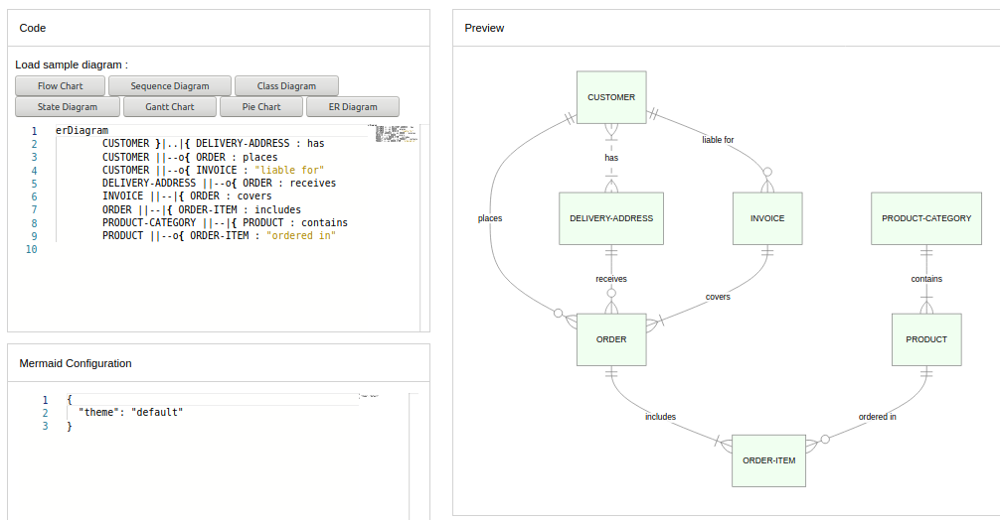

Change Log¶
Here is the list of the newest versions in Descending Order, beginning from the latest version.
Unreleased¶
8.7.0 (2020-08-09)¶
🔖 Release Notes | 📜 Full Changelog
This version brings with it a system for dynamic and integrated configuration of the diagram themes.
The objective of this is to increase the customizability of mermaid and the ease of Styling, with the customization of themes through the %%init%% directive and initialize calls.
Themes follow and build upon the Levels of Configuration and employ directives to modify and create custom configurations, as they were introduced in Version 8.6.0.
These Theming Configurations, similar to directives, will also be made applicable in the Live-Editor, for easier styling.
Site-wide Themes¶
Site-wide themes are still declared via initialize by site owners.
Example of Initalize call setting theme to base:
mermaidAPI.initialize({
'securityLevel': 'loose', 'theme': 'base'
});
Notes: Only site owners can use the mermaidAPI.initialize call, to set values. Site-Users will have to use %%init%% to modify or create the theme for their diagrams.
Themes at the Local or Current Level¶
When Generating a diagram using on a webpage that supports mermaid.
It is also possible to override site-wide theme settings locally, for a specific diagram, using directives, as long as it is not prohibited by the secure array.
Following is an example:
%%{init: {'theme':'base'}}%%
graph TD
a --> b
Making a Custom Theme with themeVariables¶
The easiest way to make a custom theme is to start with the base theme, and just modify theme variables through themeVariables, via %%init%%.
Parameter |
Description |
Type |
Required |
Objects contained |
|---|---|---|---|---|
themeVariables |
Array containing objects, modifiable with the |
Array |
Required |
primaryColor, lineColor, textColor |
Here is an example of overriding primaryColor and giving everything a different look, using %%init%%.
%%{init: {'theme': 'base', 'themeVariables': { 'primaryColor': '#ff0000'}}}%%
graph TD
A[Christmas] -->|Get money| B(Go shopping)
B --> C{Let me think}
B --> G[/Another/]
C ==>|One| D[Laptop]
C -->|Two| E[iPhone]
C -->|Three| F[fa:fa-car Car]
subgraph section
C
D
E
F
G
end
Notes: Leaving it empty will set all variable values to default.
8.6.0 (2020-07-13)¶
Version 8.6.0 introduces New Configuration Protocols and Directives and a Beta for the New Mermaid Live-Editor
With version 8.6.0 comes the release of directives for mermaid, a new system for modifying configurations, with the aim of establishing centralized, sane defaults and simple implementation.
Directives allow for a diagram specific overriding of config, as it has been discussed in Configurations. This allows site users to input modifications to config alongside diagram definitions, when creating diagrams on a private webpage that supports Mermaid.
8.5.0 (2020-04-11)¶
This version introduces New diagrams!
New diagrams in 8.5
With version 8.5 there are some bug fixes and enhancements, plus a new diagram type, entity relationship diagrams.

8.2.0 (2019-07-17)¶
🏷️ Tag
Version 8.2.0, introduces a security improvement.
A securityLevel configuration has to first be cleared, securityLevel sets the level of trust for the parsed diagrams and limits click functionality.
This was introduced in version 8.2 as a security improvement, aimed at preventing malicious use.
securityLevel¶
Parameter |
Description |
Type |
Required |
Values |
|---|---|---|---|---|
securitylevel |
Level of trust for parsed diagram |
String |
Required |
Strict, Loose, antiscript |
Notes:
strict: (default) tags in text are encoded, click functionality is disabled
loose: tags in text are allowed, click functionality is enabled
antiscript: html tags in text are allowed, (only script element is removed), click functionality is enabled
⚠️ Note: This changes the default behaviour of mermaid so that after upgrade to 8.2, if the securityLevel is not configured, tags in flowcharts are encoded as tags and clicking is prohibited.
If you are taking responsibility for the diagram source security you can set the securityLevel to a value of your choosing.
By doing this clicks and tags are again allowed.
8.1.0 (2019-06-25)¶
Implemented enhancements:
Theme for dark background #301
[Feature request] gantt diagram axis format #269
Implement render function for server side rendering using phantomjs #169
Fixed bugs:
mermaid -v filename.mmd gives You must specify at least one source file. #328
Not Able to See Labels even htmlLabels:false added #268
Closed issues:
Gantt and sequence diagram do not render #853
margins around flowchart are not balanced #852
Smaller bundles #843
unicode in labels #776
Hard-changing drawing of arrows per edge type #775
SequenceDiagram wrong #773
Render mermaid on github pages with simple code #772
FlowChart - large space between text and the image #754
Class Diagram Issues when using Mermaid in Stackedit #748
Multi-platform CI #744
gantt: sections can’t have a colon #742
Yarn build does not add mermaid.min.css to dist #732
Is there a grammar / keyword / more than just the basic examples? #718
Click event and react component #717
Long text going outside the box #706
How to migrate from yUML to mermaid? #704
Issue on Dynamic Creation in PHP #690
click "\#target"andclick "http://url"should create regular links #689Support Chinese punctuation #687
[Question] Proper way to install on Mac? #681
Has Mermaid a graphical interface to make diagrams? #668
mermaid installation on debian #649
“Cannot activate” in sequenceDiagram #647
Link (“click” statement) in flowchart does not work in exported SVG #646
How to pass styling #639
The live editor cant show seq diagram with notes for 8.0.0-alpha.3 #638
import mermaid.css with ES6 + NPM #634
Actor line cuts through other elements #633
Graph TD line out of the picture (left side) #630
Flowchart labels appear “cutoff” #628
Uncaught TypeError: _.constant is not a function (mermaid.js) #626
Missing tags and releases for newer versions #623
Mermaid and Leo / Leo Vue #622
mermaidAPI gantt Vue.js #621
Gantt sections are not separated by colors - Fix: set numberSectionStyles to 4 instead of 3 #620
how to get mermaidAPI? #617
Error in startOnLoad documentation? #616
Example export to SVG generates error #614
The new online editor does not support previously generated links #613
Grammar / Syntax documentation for flowcharts #607
Mermaid does not work with d3.js #606
Why does this code’s flowchart lines get cut-off on screen? #604
click keyword does not fire my callback (on the demo Website too) #603
Online Editor fails to show exported SVG #601
Just saying thanks! #597
stylesheet crashed with other library like abcjs #596
Missing connection #594
How to use mermaid on node.js restful api? #593
Remove status code #589
Golang based editor #588
sequenceDiagram -> notetext css font is hardcoded #587
Multiple graph in the live editor #586
All <svg> elements in page are colored black #584
Styling: classes aren’t applied to elements. #582
Rounded connections #580
Arrows are not being shown correctly in the dark theme #578
The documentation for CLI seems outdated. #572
No effect of click event:can not open link #571
Text colors are not correct in VSCODE #570
Nodes aren’t aligned properly (just need an explanation) #568
setting margin around figure in R #567
Arrows should Come out in upward and Downward direction from decision Node #566
TypeError: Cannot read property ‘select’ of undefined #563
A little bug #557
Japanese text appears garbled #554
classdiagram not works in mermaid live_editor #553
font awesome in link text? #546
q: heard of the cosmogol standard? #545
Arrow heads missing (cli, 7.0.3) #544
No Edge Boxes if useHtmlLabels=false #541
how to change mermaid text color or line text block color？ #534
FlowChart visualization broken when downloading from live editor #533
Can’t get flowchart to render paths at the top of the diagram; I even tried the online editor and that shows the same issue. Thoughts? #532
live editor make browser(safari on macOS&iOS) not longer respond #531
css classes need a prefix/namespace #527
input activate/deactivate cause safari unresponding #521
Cannot Render the Mermaid Graph to PDF ? #520
clicking links works from inset in subgraph but not from nodes #516
Strange syntax error - when importing mermaid.js #515
gantt x-axis display #510
phantomjs renamed to phantomjs-prebuilt #508
issue when using sphinxcontrib-mermaid extension for sphinx #507
layout of docs page looks broken #504
Problem showing graph with php on localhost #502
logLevel’s option doesn’t work at 7.0.0 #501
How do I get the log for a render or parse attempt? #500
Mermaid neutral style style to built in latest release #499
Any plans for adding a typescript definition file? #495
Gantt diagrams too narrow #493
Flowchart edge labels placement #490
Very different styles when rendering as png vs. svg #489
New editor that supports mermaid: Caret #488
Gant PNG margin #486
ReferenceError: window is not defined #485
Menu and layout bugs in docs #484
Mermaid resets some of the page CSS styles #482
Arrows rendering incorrectly in online editor #480
CSS stroke-dasharray ignored by browsers but not other viewers #474
mermaid - Browser Support issue #472
Totally love mermaid I might pop! #471
Sequence Diagram: Missing x on async arrows (png) #469
live editor: the svg file rendered from graph is not supported by browsers #468
Not found css #462
Phantomjs Dependency #461
Mermaid cli not working for subgraphs #459
Support for notes across multiple participants? #458
Related to Issue #329: Phantomjs issues. #455
Add a click style #426
Add Parallel block (par) to sequence diagrams #425
updating shapes after the flow chart rendering complete #424
can’t catch parse error Maximum call stack size exceeded on safari #421
Arrows endings are missing #419
shouldn’t mermaid become more like Markdown ? #417
Live editor show rendered diagram if syntax invalid #415
Linkstyle stroke does not work #410
flowchart id’s with dots in them .. break links #408
Flowchart: Link text beginning with lowercase ‘o’ causes flowchart to break #407
Some Chinese character will case Safari no responding. #405
Cannot center-justify text in nodes? #397
Edge labels should have white background in live editor #396
Live editor does not support activate/deactivate #394
Styling subgraph? #391
Update live editor to version 6.0.0 #387
sequence diagram config issue #385
How to add newline in the text #384
PhantomJS crashes on a large graph #380
Finnish support for class diagrams using plantuml syntax #377
mermaidAPI.render generated different svg code from mermaid.int() #374
Put your own action on the chart #372
when declaring participants the elements are generated twice #370
Example Flowchart is cut in display (Chrome). #368
Add shebang support to diagrams #365
Silencing CLI output #352
SequenceDiagram: 3+ Alternative Paths #348
Smaller height of actor boxes #342
Question: lib/phantomscript.js - foreignObjects in SVG - related to #58 #340
npm test fails on osx being blocked at Can not load “PhantomJS”, it is not registered! #337
Tabs & subgraphs cause rendering error #336
Display question: right angles #335
No Arrows rendered v0.5.8 #330
You had errors in your syntax. Use –help for further information. #327
Allow alternate arrow syntax that doesn’t close html comments #322
Comment in subgraph #319
Update graph #311
css conflicts with boostrap’s css #308
Can not get click event to fire. #306
Fix phantomjs2 compatibility #304
Flowcharts do not work in native IE11 #303
Integration with remark.js - tutorial added #302
Sequence diagram Loops: changing boxMargin spoils the “loop” notation #299
src/mermaid.js generates bad code #297
Fresh fork: jasmine tests fail #294
CSS clash #292
Mermaid does not work in Chrome 48 #281
circle and ellipse cannot change color by classDef #271
npm run watch doesn’t work due missing dependencies #266
label out of node #262
IE11 Support issue #261
mermaid without browser #260
Insufficient capacity of gantt diagrams #226
some WARN about installation #222
Live editor offline access #217
suggest: code highlight mode config for editors #212
Uncaught RangeError: Maximum call stack size exceeded #189
Styling label texts #50
Merged pull requests:
Bump sshpk from 1.13.1 to 1.16.1 #851 (dependabot[bot])
Significantly smaller bundles #850 (fabiospampinato)
Fix dotted lines not appearing in flowcharts when HTML labels disabled #828 (stanhu)
Fix issue with XML line breaks inside vertex labels #824 (jsyang)
linkStyle now supports list of indexes with a few tests #798 (ivan-danilov)
SVG link rendering #791 (flying-sheep)
Remove duplicate code #768 (znxkznxk1030)
Render nodes as real links #765 (flying-sheep)
Fix issue with marker-end. #757 (gjlubbertsen)
Make Class Diagrams usable in Stackedit and Live Editor #749 (monsterkrampe)
Adding trapezoid and inverse trapezoid vertex options. #741 (adamwulf)
SequenceDiagram: Add support for multiple alt else statements #641 (sechel)
fix #426 - add class .clickable on nodes with click function or link #598 (thomasleveil)
Spec fix 1 #595 (frankschmitt)
7.0.5 (2017-09-01)¶
Closed issues:
live editor latin error after update #560
Simple full example in online documentation is broken #558
Graph No Arrow Head v7.0.3 #543
Conflict while using mermaid along with core-js #512
Export to pdf on website #496
New downstream project: Mermaid Preview for VSCode #442
Can’t Zoom the flowchart ? #399
line labels are not rendered correctly in live editor #366
mermaid-loader #361
Are there any documentation or examples for classDiagram and gitGraph? #359
# character broken in 0.5.8 #347
Documentation issue: CSS example is not visible #345
Include documentation for command line usage #326
Fresh fork: can’t build dist #296
Invalid value for <svg> attribute viewBox=”0 0 -Infinity -Infinity” #291
Webpack require fails #277
New documentation - need improved logo #216
7.0.2 (2017-06-01)¶
Closed issues:
CDN is not working #511
A sampe sequenceDiagram crashes mermaid-cli #492
Mermaid doesn’t delete nodes when called multiple times #491
API crashes on 2nd render() call #478
sequenceDiagram: dotted line for alt and empty bracket should be hidden #456
SVG output (almost) not correct #434
How to set axisFormatter of gantt in mermaid CLI? #428
customizing link style with any color sets
fillproperty toblackinstead ofnone#416New line at the end of SVG file #400
CLI doesn’t work #389
Can’t render subgraphs with htmlLabels: false #367
Color arrowhead #362
CLI: Invisible text, lines in SVG output #341
Merged pull requests:
Fix spelling of ‘you’ in sequenceDiagram docs #537 (ctruelson)
Update CLI instructions #509 (filipedeschamps)
Add style for classDiagram to dark/default theme #503 (yudenzel)
Fix misspelling of “another” #479 (stevenschobert)
Fixed #456 sequenceDiagram: dotted line for alt and empty bracket sho… #477 (brookhong)
7.0.0 (2017-01-29)¶
Implemented enhancements:
Closed issues:
demos on io site not working #466
Can not be generated PNG pictures through CLI with Chinese #451
Round nodes cannot be styled with CSS classes #443
webpack gulp UglifyJsPlugin error. #440
String concatenation isn’t working #432
text flow/wrap in actor box of sequence diagram #422
Online live editor still use old version #402
uncaught TypeError: t.getTransformToElement is not a function #401
Only works when using browserify’d code #373
document the use of shebang line in mmd files #364
Diagrams are small and unreadable in IE 11 - since 0.5.1 #356
[Feature Request] ER-Diagram Support #354
The need for mermaid.css should be mentioned explicitly in the intro docs… #273
Merged pull requests:
Fix for #416, customizing link style with any color sets
fillproperty toblackinstead ofnone#452 (joshuacolvin)added tests and fix cli css style selector lowercase problem #445 (whyzdev)
Code Climate config #437 (larkinscott)
fix gantt chart cli configuration parsing including functions #430 (whyzdev)
Uses an empty text node instead of a string for svg group labels #429 (daveaglick)
use tspan via d3.textwrap to place actor text in sequence diagram #427 (whyzdev)
#422 use foreignObject/div to place actor label in sequence diagram #423 (whyzdev)
update usage and fix #273 #406 (jinntrance)
Add https://github.com/raghur/mermaid-filter to downstream projects docs page #404 (raghur)
Add missing space for ‘Labels out of bounds’ section #386 (The-Alchemist)
override normal flowchart arrowhead to allow css styling #376 (dodoinblue)
Fix typo in the sequence diagram documentation #369 (ggpasqualino)
6.0.0 (2016-05-29)¶
Closed issues:
Docs css: code hard to read #324
About Markpad integration #323
How to link backwards in flowchart? #321
Help with editor #310
+1 #293
Basic chart does not render on Chome, but does in Firefox #290
Live editor is broken #285
“No such file or directory” trying to run mermaid 0.5.7 on OS X #284
participant name as “Long Long Name” #283
Windows - cli - could not find phantomjs at the specified path #236
Merged pull requests:
The option of gantt for the spaces for the section names. #353 (zeroyonichihachi)
Gitgraph: Make reset work with parent ref carets #350 (raghur)
Remove the text-shadows that make the text look blurry #349 (AsaAyers)
add line interpolation to linkStyle in flowchart #346 (AlanHohn)
Dark theme for better contrast on darker backgrounds #317 (crodriguez1a)
Support leading comments for sequenceDiagrams #312 (ashsearle)
Show a little lenience for white-space around names #309 (ashsearle)
Issue 299: Sequence diagram Loops: changing boxMargin spoils the “loop” notation #300 (LarryKlugerDS)
Issue 297 - src/mermaid.js generates bad code #298 (LarryKlugerDS)
Updated instructions for running tests #295 (LarryKlugerDS)
Quote phantomPath so that it doesn’t fail on window #286 (raghur)
0.5.7 (2016-01-25)¶
Closed issues:
Mermaid + LightPaper = ❤️ #280
Bower Integration #278
Mermaid breaks when variables end in ‘v’ #276
sequence diagrams don’t support participant aliasing #263
One diagram that fails to render stops further execution on the page #259
Where to find line layout algorithm? #258
Compatibility with node.js #257
Label resizing with dynamically loaded fonts #255
SVG arrowheads are broken in the CLI #249
Cannot read property ‘replace’ of undefined #239
Merged pull requests:
0.5.6 (2015-11-22)¶
Implemented enhancements:
Add download SVG link to the live editor #144
Fixed bugs:
Live Editor: Permalink address not being parsed #202
Closed issues:
title doesn’t work in sequenceDiagram #248
hypen-minus should be valid in sequence diagram alt/else/etc. descriptions #247
Broken in firefox? #245
When there is a Chinese symbol in the flowchart, it will crash。 #238
Non-alpha characters included in ALPHA token (flow graph jison) #232
subgraph not rendering with change to sample #231
sequence diagram requires a new line at the end? #229
Merged pull requests:
0.5.5 (2015-10-21)¶
Closed issues:
sequence diagram, arrowhead instead of crosshead #227
Merged pull requests:
0.5.4 (2015-10-19)¶
Implemented enhancements:
Set log level from mermaid configuration #220
Links in sequence diagrams #159
Add syntax for double headed arrows #123
Fixed bugs:
comment characters
%%cause parse error #141
Closed issues:
Marker-end arrow cannot be shown for URL with query parameter #225
Please update bower’s D3 version #221
Width fixed to 400px #204
render to png from the cli does not display the marker-end arrow heads #181
Merged pull requests:
0.5.2 (2015-10-04)¶
Implemented enhancements:
Support for hyperlink and tooltip #34
Closed issues:
Installing “atom-mermaid@0.1.3” failed #218
node feature request #211
Please add prefix for styles #208
Bad handling of block arguments #207
please consider port to mac osx #203
allow phantomjs >=1.9.x #201
syntax for venn diagrams? #200
Broken CLI Graphs? (v0.5.1) #196
Static site does not render under HTTPS #194
Error on simple graph #192
Escape “~” #191
Trying to add link using ‘click’ to flowchart #188
cli: no lines and arrowheads rendered / only dotted lines #187
text of mermaid div displayed on page #186
using mermaid with laravel #185
Atom editor package #183
Auto linewrap for notes in sequence diagrams #178
Execute code after initialize #176
Autoscaling for all diagram types #175
Problem wit click event callback #174
How to escape characters? #170
it can not work #167
Broken subgraph using the CLI #153
IE Support issue #142
Flowchart truncated #140
Double Quote as text is not working #219
classDef / class not working with htmlLabels? #210
Links in graph missing #209
Last word in comment boxes getting cut off by word wrap library : ( #195
Escaping characters in sequence diagram #193
SVG foreignObject rendering #180
IE9 issue #179
inoperable in an AMD/requirejs environment: IPython Notebook #127
[Parser] Hyphen in participant name bring TypeError #74
Merged pull requests:
0.5.1 (2015-06-21)¶
Implemented enhancements:
To SVG Export #146
Possibility to set the width of the generated flowchart #129
Special characters break parsing #54
Responsive graph layout for mobile viewers #51
Styling connector lines #31
Fixed bugs:
flowchart - styling of edges via css overrides specific styles set in the graph definition #128
Closed issues:
Live editor is broken #173
0.5.0 no longer respects custom date definitions in Gantt diagrams #171
Drop label character restrictions #162
can’t nest subgraphs in flowchart #161
Unable to generate gantt diagram with mermaid CLI #158
Inline css by “mermaid” #157
Finite State Machine Diagram #152
How to center align gantt diagram #150
Security concern regarding class definition #148
File Extension #147
setTimeoutwith clusters problematic with programmatic edits and no callback #133module.exports.cloneCssStyles() in combination with Angularjs breaks display in Chrome and IE #126
Gantt - suitable xAxis for longer project #125
How to get started with this project ? #64
Merged pull requests:
0.5.0 (2015-06-07)¶
Implemented enhancements:
Add a css file, mermaid.css, with default styling #122
software architecture diagram #36
Support for bar charts and pie diagrams #22
Closed issues:
uglifyjs wanrings which means we can improve the code #156
New(er) features unavailable in downloadable js files? #151
Add gh-gapes link to description #143
Some examples not displayed on Firefox 36.0.1 #138
tags ending in a “v” don’t render #132
Links in flowchart #131
Using the library for iOS development #130
Add capability for gantt diagrams #118
lower case v causes error in the parser #108
Label’s css conflict with boostrap’s .label #67
TypeError: Cannot read property ‘layout’ of undefined #37
Merged pull requests:
0.4.0 (2015-03-01)¶
Implemented enhancements:
Fixed bugs:
NoModificationAllowedError #23
Closed issues:
0.3.4 (2015-02-15)¶
Implemented enhancements:
Apply styling from css when using the CLI utility #85
Generated SVG works poorly outside web browsers #58
Generating SVG text blob for use in Node #2
Closed issues:
Subgraph syntax bug? #120
Live editor #115
Error in “Basic Syntax” wiki page #113
semicolons, anyone? #111
undefined
sequenceConfigfails #109Sequence Diagrams: Show Actors below as well #106
Allow overriding sequence diagram configuration (SVG properties) #103
Error when rendering A– This is the text – B #102
Clipping in documentation #97
isolate class styling to the svg container #92
Make the new graph declaration more visual #40
Merged pull requests:
0.3.3 (2015-01-25)¶
Implemented enhancements:
Support for dotted links #26
Closed issues:
Merged pull requests:
Require d3 directly to better support Node usage #107 (markdalgleish)
Add new parameter to the console client to override the svg configuration in sequence diagrams #104 (jjmr)
0.3.2 (2015-01-11)¶
Implemented enhancements:
Make link text look like it is on the line #53
Closed issues:
disable auto render #91
Tidy breaks mermaid (linebreaks in <div>) #87
Bug: <br> being rendered as text in node #73
Graph edges appear to render outside of the canvas #70
Merged pull requests:
0.3.1 (2015-01-05)¶
Implemented enhancements:
Closed issues:
Non ASCII chars in labels #84
‘undefined’ titles of Quicklinks on the usage page #80
[cli] Enhancement proposal: not fail –version / –help if phantomjs isn’t installed #71
Merged pull requests:
0.3.0 (2014-12-22)¶
Implemented enhancements:
Fixed bugs:
This characters failed the lexical parsing #46
Closed issues:
Trailing whitespace at the end of lines is not ignored #55
Use classes instead of inline style for easy styling #24
Merged pull requests:
0.2.16 (2014-12-15)¶
Fixed bugs:
Lines routed outside visible area #19
Closed issues:
Mermaid not rendering properly on Wordpress pages #59
Improve example page with live demo #52
Does not render upon AngularJS Updates #45
Download link in README.MD doesn’t work. #42
linkStyle usage is not obvious #41
Move *.spec.js in src/ to test/ #35
Merged pull requests:
0.2.15 (2014-12-05)¶
Fixed bugs:
Closed issues:
Question marks don’t render properly with /dist/mermaid.full.min.js #30
Provide parse function in browser widthout
require? #21Better label text support #18
Merged pull requests: